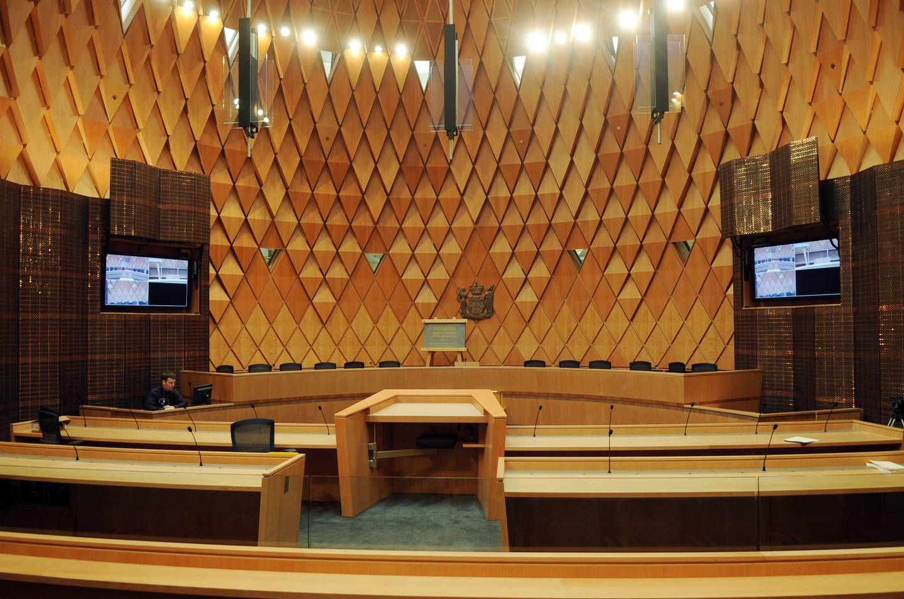
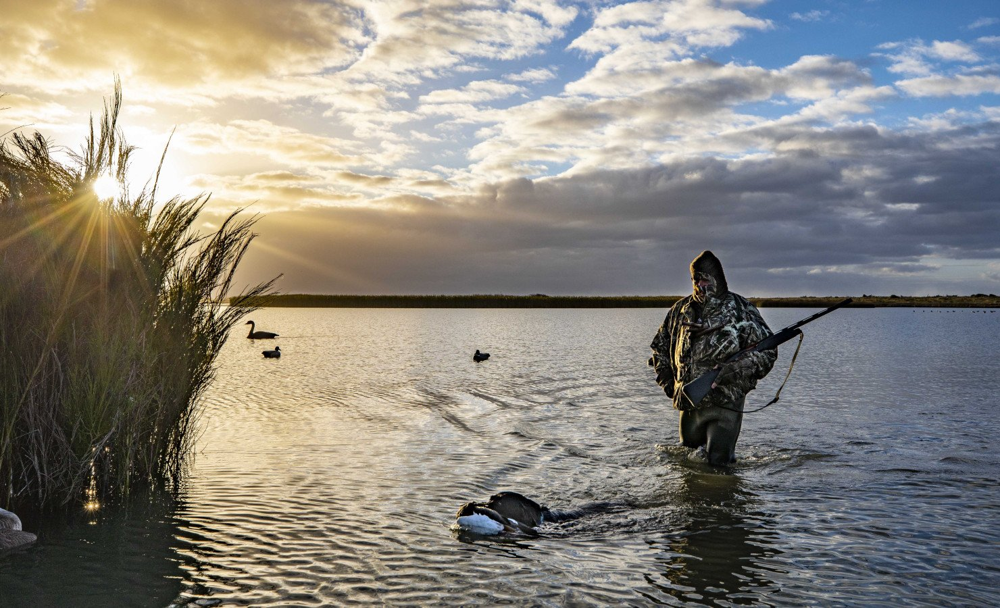

Susan McCarty
Strategic Leadership | Business Transformation | Operational Excellence
sue@businessvitality.co.nz |
021 931 854 |
LinkedIn
Professional Summary
Strategic and results-driven leader with extensive experience in business transformation, commercial growth, and operational/service excellence across both public and private sectors...
Career History
- Management Consultant – Business Vitality (2017–Present)
- Chief Executive Officer – Castleford (2015–2017)
- Chief Executive Officer – Marketing Association (2007–2014)
- Board Member – Advertising Standards Authority (2007–2014)
- Chief Executive Officer – Proudmouth Dentistry (2004–2007)
- Founder & CEO – Via NZ Ltd (2001–2004)
- General Manager – esolutions (1999–2001)
- Early Career – EDS, Netway Communications, Telecom NZ (1987–1999)
Success Stories
From Fragmentation to Efficiency
How the Department of Conservation Built a Smarter, More Integrated ICT Service Model

Building Our Future
How the Ministry of Justice Built a Resilient, High-Performing Policy Group for the Future
Smarter Contracting, Greater Value
NZ Beef & Lamb’s Blueprint for Smarter, More Transparent Contract Management
From Reactive to Resilient
How Liquid IT Transformed Client Experience, Knowledge Management, and Security
From Creative Chaos to Scalable Success
How Castleford Strengthened Systems, Services, and Brand for Sustainable Growth

License to Evolve
How Fish & Game Designed a Strategic Roadmap for Digital Growth, Efficiency, and Engagement
From Crisis to Stability
How Proudmouth Transformed and Positioned Itself for a Successful Sale
Leadership Commitments
- Communicate clearly, concisely, authentically & often.
- Challenge my team by setting high but attainable standards.
- Remain steadfastly curious in the pursuit of excellence and innovation.
- Be the best example of honesty & integrity in the workplace.
- Be a source of positive energy & unwavering belief for our vision.
- Empower every team member with the support, resources, & opportunities to grow, thrive, and achieve their full potential.
Interests
My fiancé Brendan and I have six geographically scattered adult children between us, and share our wonderful home with three dogs and a cat. I enjoy my natural surroundings and vibrant local community, walking, e-biking, cooking, and gardening, all of which keep me refreshed and grounded.